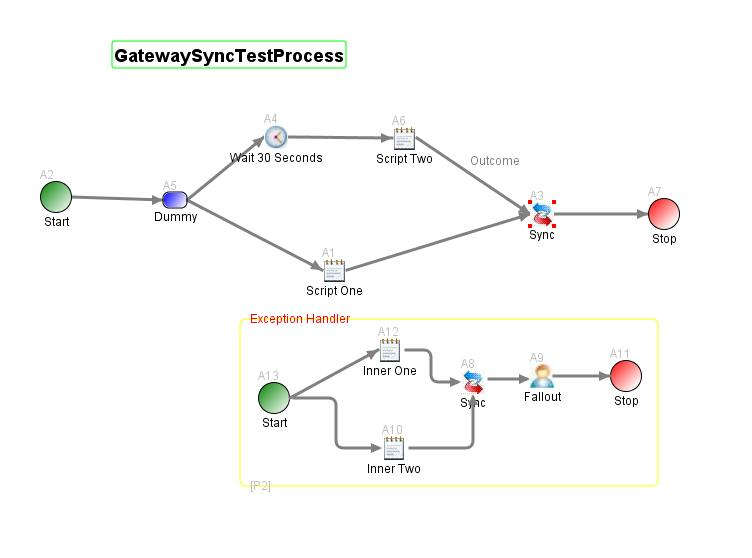

Synchronization Activities
Synchronization activities are useful whenever two or more divergent threads of workflow processing must be rejoined.
The process definition below illustrates how a synchronization activity can be used to coordinate two parallel execution paths.
To configure the activity, you select among the activities immediately upstream of the sync activity in the process flow.
The statuses of the selected activities control the flow out of the sync activity, and for this reason in BPMS terminology
the activity is frequently referred to as a Gateway.
By default, process execution is halted at the sync activity until all the selected upstream activities have been completed.
This default behavior can be overridden by specifying a synchronization expression. The syntax of the expression is governed
by the Java Expression Language standard. MDW uses the Apache Commons JEXL implementation.
The expression should return a boolean value indicating whether flow can proceed.
The expression language syntax will be familiar to those who have used expressions in JSPs or Facelets.
The variables in your synchronization expression are the upstream activity logical IDs
(for MDW 4 versions 4.4.14 and earlier and MDW 5 versions 5.1.01 and earlier, the escaped activity names must be used
in place of logical IDs. See a later section for details).
For example, in the illustration below if you wanted execution to continue when EITHER the 'Script One' activity OR the 'Script Two'
activity completed, you would write your sync expression as follows:
A1 || A6
If you wanted execution to continue only after BOTH 'Script One' AND 'Script Two' finished processing, you could leave the sync
expression blank (since this is the default behavior), or you could create the equivalent expression:
A1 && A6
For more sophisticated conditions you may also include process variables in your expression. So, for example, if you'd mapped a
variable called 'myVar' to your process definition, you could include it in your expression as follows:
A1 && (A6 || myVar == 'somethingSpecial')
The expression above would allow execution to continue if 'Script One' was completed and either 'Script Two' was completed or the value
of the process variable 'myVar' was equal to the string 'somethingSpecial'. It should be noted that the expression is evaluated
at the times when the sync activity is executed (whenever an upstream activity completes), so the value of 'myVar' used in the expression
would be whatever it was set to at those specific evaluation times.

Wait For Unsolicited Events
It is often desired that when the activity is waiting for synchronization condition to be satisfied,
it needs to handle unsolicited external events such as receiving a supplemental
order or cancellation of the request.
The activity allows to optionally register for listening
to unsolicited events before all subprocesses terminate.
It uses the same mechanism as EventWaitActivity to register
the event waits (following this link
for details of event wait registration and additional details).
When the activity instance receives an event before the timer expires,
it can be left in one of the 2 statuses:
- Hold. The activity instance will be put on a hold status (showing cyan color
in the designer's process instance view). While the activity instance in hold status,
incoming transition instance will be recorded but the activity will remain in hold
status, without being completed. When the
activity is put back on waiting status (see this link
for discussion on how this can happen), if the synchronization condition is satisfied,
the activity instance will then transition out.
- Waiting. The activity instance continues waiting (i.e. still actively responds
to incoming transitions as well as other unsolicited events).
We note that the activity can only listen to recurring events. This limitation
is needed to avoid infinite looping when the activity instances resume
waiting from hold status, non-recurring events that have already arrived
would always trigger a transition.
To provide custom code handling unsolicited events, you will need to override
processOtherMessage(String message).
The method is passed in with one argument, which is the entire message. The default
method does nothing. The completion code after processing the message is configured
in the designer, but you can override it in the code by invoking setReturnCode().
Backward Compatibility - Using Escaped Activity Names
Using logical IDs to represent activities in the synchronization expression
is implemented in MDW 4.4.15 and MDW 5.1.02. For MDW 4 versions 4.4.14 and earlier
and MDW 5 versions 5.1.01 and earlier, the escaped activity names must be used
in place of logical IDs.
Because activity names may contain spaces and other characters that are not legal
variable names to JEXL, they must be escaped with the following rules:
- Replace any character in the activity names that is not letter or digit by "_"
- If there are several consecutive characters that are not letter or digit, use
a single "_" instead of one for each illegal character.
For example, 'Script One' must be escaped as 'Script_One', and 'Like this? Or that?'
must be 'Like_this_Or_that_' (note only one '_' is used between "this" and "Or" in place
of the question mark and the space following it).